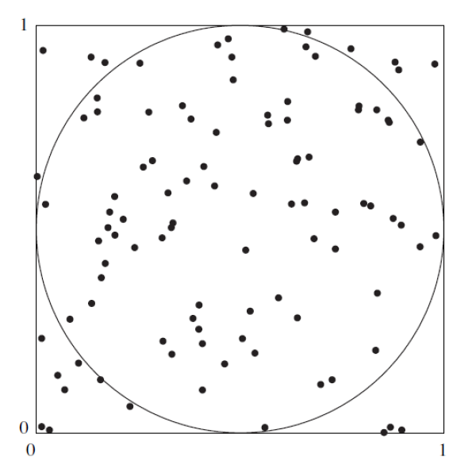

Actividad 2

El proceso de simulación constituye una herramienta poderosa para la estadística que se pueden emplear para entender relaciones complejas y estimar valores difíciles de calcular directamente. Para entenderlo utilizaremos se plantean los siguientes problemas:
Problema 1
Estimación del valor de \(\pi\)
La siguiente figura sugiere como estimar el valor de \(\pi\) con una simulación. En la figura, un circuito con un área igual a \(\pi/4\), está inscrito en un cuadrado cuya área es igual a 1. Se elige de forma aleatoria \(n\) puntos dentro del cuadrado . La probabilidad de que un punto esté dentro del círculo es igual a la fracción del área del cuadrado que abarca a este, la cual es \(\pi/4\). Por tanto, se puede estimar el valor de \(\pi/4\) al contar el número de puntos dentro del círculo, para obtener la estimación de \(\pi/4\) . De este último resultado se encontrar una aproximación para el valor de \(\pi\) .

Pasos sugeridos:
Genere \(n\) coordenadas \(x\): \(X_{1}\), . . . , \(X_{n}\). Utilice la distribución uniforme con valor mínimo de \(0\) y valor máximo de \(1\). La distribución uniforme genera variables aleatorias que tienen la misma probabilidad de venir de cualquier parte del intervalo \((0, 1)\).
Genere \(1000\) coordenadas \(y\) : \(Y_{1}, . . . , Y_{n}\), utilizando nuevamente la distribución uniforme con valor mínimo de \(0\) y valor máximo de \(1\).
Cada punto \((X_{i},Y_{i})\) se encuentra dentro del círculo si su distancia desde el centro \((0.5, 0.5)\) es menor a \(0.5\). Para cada par \((X_{i},Y_{i})\) determine si la distancia desde el centro es menor a \(0.5\). Esto último se puede realizar al calcular el valor \((X_{i}-0.5)^{2}+(Y_{i}-0.5)^{2}\), que es el cuadrado de la distancia, y al determinar si es menor que \(0.25\).
¿Cuántos de los puntos están dentro del círculo? ¿Cuál es su estimación de \(\pi\)?
Nota
Con sólo 1000 puntos, es probable que la estimación presente un error de 0.05 o más. Una simulación con 10000 y 100000 puntos tiene mayores probabilidades de dar como resultado una estimación muy cercana al valor verdadero.
funciones recomendadas :
runif(),funtion(){}Entregable : enlace en RPubs con informe 1
Problema tomado de Navidi(2006)
Problema 2
Propiedades de los estimadores
La simulación ayuda a entender y validad las propiedades de los estimadores estadísticos como son. insesgadez, eficiencia y la consistencia principalmente. El siguiente problema permite evidenciar las principales características de un grupo de estimadores propuestos para la estimación de un parámetro asociado a un modelo de probabilidad.
Sean \(X_{1}\), \(X_{2}\), \(X_{3}\) y \(X_{4}\), una muestra aleatoria de tamaño \(n = 4\) cuya población la conforma una distribución exponencial con parámetro \(\theta\) desconocido. Determine las características de cada uno de los siguientes estimadores propuestos:
- \(\widehat{\theta_1} = \dfrac{X_{1} + X_{2}}{6} + \dfrac{X_3 + X_4}{3}\)
- \(\widehat{\theta_2} = \dfrac{(X_1 + 2 X_2 + 3 X_3 + 4 X_4)}{5}\)
- \(\widehat{\theta_3} = \dfrac{X_1 + X_2 + X_3 + X_4}{4}\)
- \(\widehat{\theta_4} = \dfrac{\min\{X_1,X_2,X_3,X_4\} + \max\{X_1,X_2,X_3,X_4\}}{2}\)
Nota
Genere una muestras de n=20, 50, 100 y 1000 para cada uno de los estimadores planteados.
En cada caso evalue las propiedades de insesgadez, eficiencia y consistencia
Suponga un valor para el parámetro \(\theta\)
funciones recomendadas :
function(){},rexp(),data.frame(),apply(),boxplot()Entregable : enlace en RPubs con informe 2
Problema 3
Teorema del Límite Central
El Teorema del Límite Central es uno de los más importantes en la inferencia estadística y habla sobre la convergencia de los estimadores como la proporción muestral a la distribución normal. Algunos autores afirman que esta aproximación es bastante buena a partir del umbral \(n > 30\).
A continuación se describen los siguientes pasos para su verificación:
- Realice una simulación en la cual genere una población de \(n=1000\) (Lote), donde el porcentaje de individuos (supongamos plantas) enfermas sea del 50%.
- Genere una función que permita:
- Obtener una muestra aleatoria de la población y
- Calcule el estimador de la proporción muestral \(\widehat{p}\) para un tamaño de muestra dado \(n\).
- Repita el escenario anterior (b) \(n=500\) veces y analice los resultados en cuanto al comportamiento de los \(500\) resultados del estimador \(\widehat{p}\). ¿Qué tan simétricos o sesgados son los resultados obtenidos? y ¿qué se puede observar en cuanto a la variabilidad?. Realice en su informe un comentario sobre los resultados obtenidos.
- Repita los puntos b y c para tamaños de muestra \(n=5\), \(10\), \(15\), \(20\), \(30\), \(50\), \(60\), \(100\), \(200\), \(500\). Compare los resultados obtenidos
para los diferentes tamaños de muestra en cuanto a la normalidad.
Utilice pruebas de bondad y ajuste (shapiro wilks
:
shspiro.test()) y métodos gráficos (gráfico de normalidad:qqnorm()). Comente en su informe los resultados obtenidos
- Repita toda la simulación (puntos a – d), pero ahora para lotes con 10% de plantas enfermas y de nuevo para lotes con un 90% de plantas enfermas. Concluya sobre los resultados del ejercicio.
Nota
- funciones recomendadas :
rbinom(),data.frame(),apply()
Entregable : enlace en RPubs con informe 3
Problema 4
Estimacción boostrap
Cuando se extrae una muestra de una población que no es normal y se requiere estimar un intervalo de confianza se pueden utilizar los métodos de estimación bootstrap. Esta metodología supone que se puede reconstruir la población objeto de estudio mediante un muestreo con reemplazo de la muestra que se tiene. Existen varias versiones del método. Una presentación básica del método se describe a continuación:
El artículo de In-use Emissions from Heavy Duty Dissel Vehicles (J.Yanowitz, 2001) presenta las mediciones de eficiencia de combustible en millas/galón de una muestra de siete camiones. Los datos obtenidos son los siguientes: 7.69, 4.97, 4.56, 6.49, 4.34, 6.24 y 4.45. Se supone que es una muestra aleatoria de camiones y que se desea construir un intervalo de confianza del 95 % para la media de la eficiencia de combustible de esta población. No se tiene información de la distribución de los datos. El método bootstrap permite construir intervalos de confianza del 95 % - Para ilustrar el método suponga que coloca los valores de la muestra en una caja y extrae uno al azar. Este correspondería al primer valor de la muestra bootstrap \(X^{∗}_{1}\). Después de anotado el valor se regresa \(X^{∗}_{1}\) a la caja y se extrae el valor \(X^{∗}_{2}\) , regresandolo nuevamente. Este procedimiento se repite hasta completar una muestra de tamaño \(n\), \(X^{∗}_{1}\),\(X^{∗}_{2}\),\(X^{∗}_{2}\),\(X^{∗}_{n}\), conformando la muestra bootstrap.
Es necesario extraer un gran número de muestras (suponga k = 1000). Para cada una de las muestra bootstrap obtenidas se calcula la media \(\bar{X^{∗}_{i}}\), obteniéndose un valor para cada muestra. El intervalo de confianza queda conformado por los percentiles \(P_{2.5}\) y \(P_{97.5}\). Existen dos métodos para estimarlo:
| Método 1 | \((P_{2.5}; P_{97.5})\) |
| Método 2 | \((2\bar{X} − P_{97.5}; 2\bar{X} − P_{2.5})\) |
Construya el intervalo de confianza por los dos métodos y compare los resultados obtenidos. Comente los resultados. Confiaría en estas estimaciones?
Nota
las muestras bootstrap se pueden obtener a partir de muestreo aleatorio con repetición (o tambien llamado con sustitución)
Entregable : enlace en RPubs con informe 4
funciones recomendadas :
sample(),apply(),quantile()
Problema tomado de Navidi(2006)